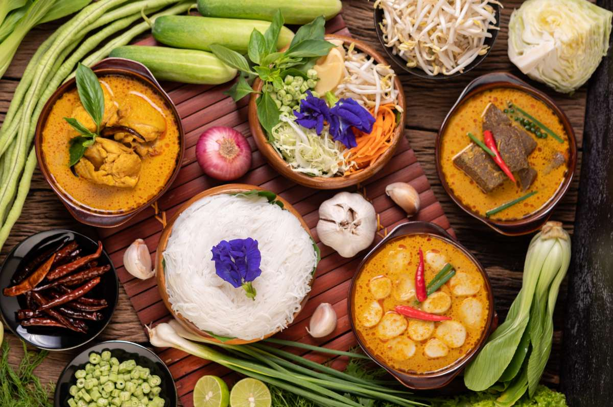
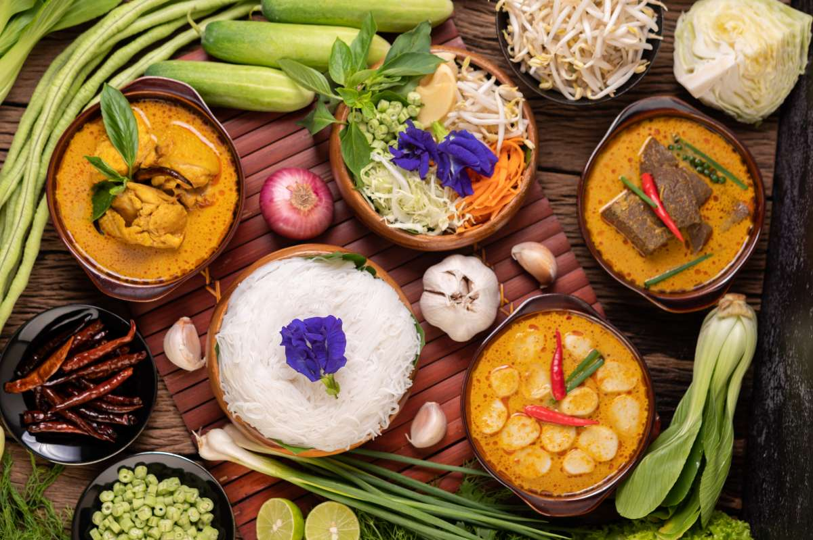

The food culture of Arunachal Pradesh is as diverse as its people, reflecting the rich heritage of the various indigenous tribes inhabiting the region. The cuisine is primarily influenced by the state's geography, with abundant forests, rivers, and hills providing access to fresh and organic ingredients. The staple diet mainly includes rice, vegetables, fish, and meat, often cooked with minimal spices, preserving the natural flavors of the ingredients.
Staples:
Rice is the staple food across Arunachal Pradesh, and it is often paired with dishes made from local greens, bamboo shoots, and meats. Sticky rice, locally known as Tungtap, is a popular variation, and rice is sometimes cooked wrapped in leaves, giving it a distinct aroma. Millet is also consumed in some regions, especially in areas inhabited by the Monpa tribe.
Rice is the staple food across Arunachal Pradesh, and it is often paired with dishes made from local greens, bamboo shoots, and meats. Sticky rice, locally known as Tungtap, is a popular variation, and rice is sometimes cooked wrapped in leaves, giving it a distinct aroma. Millet is also consumed in some regions, especially in areas inhabited by the Monpa tribe.
Meat and Fish:
Meat, especially pork, is a significant part of the diet in Arunachal Pradesh. Pork is used in various preparations, including boiled, smoked, or fermented dishes. Smoked meat is a common preservation method and adds a rich flavor to dishes. Fish, caught from the rivers, is also widely consumed, often cooked in bamboo tubes over an open flame, which imparts a unique, earthy taste. Ngatok is a popular fish curry cooked with local herbs and spices.
Meat, especially pork, is a significant part of the diet in Arunachal Pradesh. Pork is used in various preparations, including boiled, smoked, or fermented dishes. Smoked meat is a common preservation method and adds a rich flavor to dishes. Fish, caught from the rivers, is also widely consumed, often cooked in bamboo tubes over an open flame, which imparts a unique, earthy taste. Ngatok is a popular fish curry cooked with local herbs and spices.
Bamboo Shoots:
One of the most iconic ingredients in Arunachal cuisine is bamboo shoots, which are used in a variety of dishes. They are often boiled, fermented, or stir-fried with meats and vegetables. The flavor of bamboo shoots ranges from mildly sweet to tangy, making it a versatile ingredient in the local cuisine.
One of the most iconic ingredients in Arunachal cuisine is bamboo shoots, which are used in a variety of dishes. They are often boiled, fermented, or stir-fried with meats and vegetables. The flavor of bamboo shoots ranges from mildly sweet to tangy, making it a versatile ingredient in the local cuisine.
Chutneys and Pickles:
A variety of chutneys (locally known as Pika Pila) made from fermented fish or bamboo shoots are common in the daily diet. These chutneys add a burst of flavor to the relatively mild base dishes. Pickles made from bamboo shoots, pork fat, and local herbs are also quite popular.
A variety of chutneys (locally known as Pika Pila) made from fermented fish or bamboo shoots are common in the daily diet. These chutneys add a burst of flavor to the relatively mild base dishes. Pickles made from bamboo shoots, pork fat, and local herbs are also quite popular.
.jpeg) 

Traditional Dishes:
- Thukpa: A noodle soup with Tibetan influence, especially popular in the Monpa tribe. It is made with vegetables, meat, and spices. - Zan: A porridge-like dish made from millet or wheat, often consumed by the Monpa and Sherdukpen tribes. - Wungwut Ngam: A traditional chicken dish from the Tangsa tribe, cooked with sticky rice powder and local spices.
- Thukpa: A noodle soup with Tibetan influence, especially popular in the Monpa tribe. It is made with vegetables, meat, and spices. - Zan: A porridge-like dish made from millet or wheat, often consumed by the Monpa and Sherdukpen tribes. - Wungwut Ngam: A traditional chicken dish from the Tangsa tribe, cooked with sticky rice powder and local spices.
Fermented Foods:
Fermentation is a key method of food preservation in Arunachal Pradesh. Fermented soybeans (known as Peron) and fermented bamboo shoots are commonly used ingredients. These fermented foods add a unique tangy flavor and are believed to have numerous health benefits.
Fermentation is a key method of food preservation in Arunachal Pradesh. Fermented soybeans (known as Peron) and fermented bamboo shoots are commonly used ingredients. These fermented foods add a unique tangy flavor and are believed to have numerous health benefits.
Beverages:
Apong, a locally brewed rice beer, is an integral part of the culture and is commonly consumed during festivals and celebrations. Each tribe has its own way of brewing Apong, and it is often served in bamboo mugs. Other traditional beverages include Marua, made from fermented millet or barley.
Apong, a locally brewed rice beer, is an integral part of the culture and is commonly consumed during festivals and celebrations. Each tribe has its own way of brewing Apong, and it is often served in bamboo mugs. Other traditional beverages include Marua, made from fermented millet or barley.
Influence of Nature and Simplicity:
The cuisine of Arunachal Pradesh is largely organic, with most ingredients sourced from forests or home gardens. The use of local herbs and simple cooking techniques is characteristic of the food here. The emphasis on boiling, steaming, and fermenting rather than frying helps retain the nutritional value of the food while keeping it light and healthy.
The cuisine of Arunachal Pradesh is largely organic, with most ingredients sourced from forests or home gardens. The use of local herbs and simple cooking techniques is characteristic of the food here. The emphasis on boiling, steaming, and fermenting rather than frying helps retain the nutritional value of the food while keeping it light and healthy.
In conclusion, the food of Arunachal Pradesh is a reflection of the state's natural bounty and tribal traditions, emphasizing fresh ingredients and simple, flavorful preparations. It offers a unique culinary experience, deeply connected to the environment and cultural practices of the region.